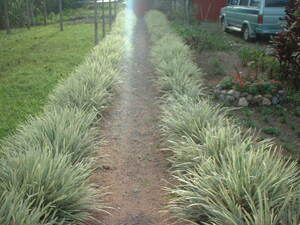
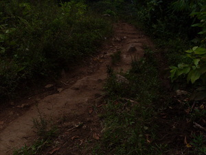

dalan  
/dalan/
n.
“path”
n.
path
Wrd.Gloss: path
Hendei ka dalan te eggendue te engki Mirian?
Where is the way going to Mirian?
Eng. path; trail; road; way
Tag. daán
Ceb. dalan; karsada
Ilo.: dálan
Tigwanon: dalan
Binukid: dalan
Sarangani: dalan
WBM: dalan
Ilianen: dalan
Tagbawa: dalan
Cotabato Manobo: dalan
Dibabawon: daan
Kinamigin: daan
Cagayano: dałan
Proto: dalan
OCM: Highways and Bridges (491)
Online dict status: -
Usage level: B
vi.
for someone (egderalan, agent, eg><ø-rdpCV-) to make a path or trail (egdalanen, theme, eg><en-) somewhere (egdalanan, location, eg><an-)
Mahirap ka egderalan su egkengatued.
It is difficult to make a trail because we'll be pierced.
Seini ka meupiya ne egdalanen su makehal ka tanè.
This area is a good place to make a trail because the soil is solid.
Egdalanan te me etew ka sika ne bubungan peendiyè te limang.
People will make path over that mountain going to the other side.
Eng. make path; path, make; road, make; trail, make
Online dict status: -
Usage level: M
vi.
Data Qual: Where does this form come from? What is the affixation form? Is it used with other roots? [RJH]
for someone (egpatiralan, agent, egpati-) to be on the road or path
Paayun-ayun ke rè patiralan kayi ne dutun dè iya te kewun-aan ka belun.
Just go straight on this road and you can find the well ahead of you.
Eng. travel
Online dict status: -
Usage level: R
n.
(deralanen, rdpCV–en) paths, roads
Diyè kid e egpamewu te deralanen.
Let's eat our lunch on the road.
Eng. paths; roads
Online dict status: -
Usage level: R
Updated by: RJH,RMU,RJH,AAA,RUL,RJH
Last updated: 04/Nov/2015
"dalan" in text "Nekegsinug-ung diye te dalan"
"dalan" in text "Due daruwan lukes ne nekegsinug-ung diye te dalan"
"dalan" in text "Due daruwan etew ne nekegsinug-ung diye te dalan"
"dalan" in song "Me sundalu ni Kristu"
This page last updated: 03-Jan-2020
Copyright © 2009-2014, Matigsalug Language Christian Association, Inc